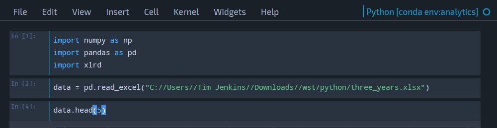

Change Jupyter's CSS
14 November 2017
The Jupyter Project was originally part of the IPython Project, and has since expanded to include support for a variety
of languages for scientific computing. It's a nifty way to display the process of sifting through data, and its legacy in publishing academic work is apparent
if only because the background is totally white by default. Perfect for converting to LaTeX, but for industry and anyone accustomed to dark themes in other IDEs
it's hard to look at.
A lot of older documentation will tell you to go to the IPython dot folder as IPython is a Jupyter dependency, though more recent releases
have a custom.css file in a much more shallow location in this directory, usually ~\.jupyter\custom\custom.css
You can find lots of themes in this github repo.
Glorious.
